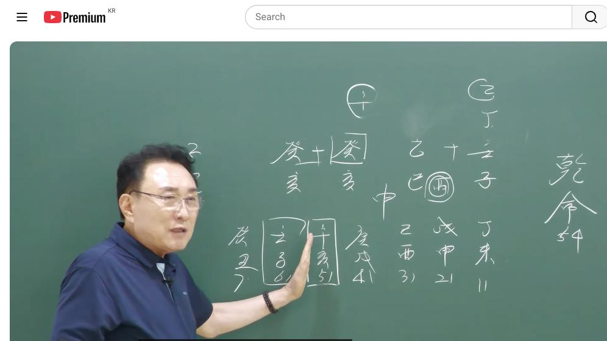

남촌물상TV 전체 문서 › 동영상 V0145
불(火)이 곧 돈! 내사주 재물 터지는 비결은?

| 문서 번호 | V0145 (동영상) |
|---|---|
| 영상 URL | https://www.youtube.com/watch?v=Bg-f7RLGRIc |
| 영상 ID | Bg-f7RLGRIc |
| 게시일 | 2025-09-05 |
| 길이 | 17:02 (1022초) |
| 조회수 | 816회 (수집 시점 기준) |
| 카테고리 | Education |
| 자막 | ko (자동생성) |
| 수집 시각 | 2026-08-30 19:08 (KST) |
영상 설명 (YouTube 설명 원문 그대로)
물이 없어 세종시로 이사하면 대박! 당신의 재물 오행은?
사주 원국에 물이 많고 무재 사주 화가 재물이 사주 풀이
전체 자막 (441구간 · 타임스탬프 클릭 시 해당 장면으로 이동)
[0:02][음악]
[0:05]그 남자 사주 54세 임자 을사 개해
[0:08]개해 전무 물로 구성된 사주예요.
[0:10]자, 이런 사주들을 보실 때
[0:12]여러분들이이
[0:14]굉장히 아마 그 혼라이 올 수도
[0:16]있어요. 이런 사주는 우리 물상눈에
[0:19]그 천관의 합의원료와 끌어온 법칙을
[0:21]쓰지 않으면 고존에서도 풀기 어려운
[0:23]거예요. 그냥 종격이다. 이런
[0:26]식으로만 풀지 못하는 거거든요. 그
[0:28]이제 우리들은 가장 정확하게 집어낼
[0:30]수 있는게 우리 물상론이기 때문에
[0:32]지금 프로보게 여러분들이 잘
[0:34]들어보시고 아마 판단하시면 됩니다.
[0:37]자,이 사주에 그 없는게 뭐가
[0:40]없어요? 첫째 토합 초가 없죠. 토가
[0:43]그는 것은 관이 없다는 얘기입니다.
[0:45]그렇죠? 무관사주예요. 자, 그다음에
[0:48]또 없는게 뭐 있어요? 자, 금이
[0:49]없다. 자, 우리 이런 항식이 어떤
[0:52]생각을 해야 되냐면 물이 많다고
[0:54]그래서 금이 필요치 않은게 아닙니다.
[0:56]항시 물은 생산이 돼 줘야 원천수가
[1:00]흘러 줘야 순환이 되고 물이 된
[1:02]것이지 물이 많으니까 괜찮아.
[1:04]언젠가는 말라요. 그래서 반드시 금이
[1:08]필요해야 됩니다. 그래서 우리는
[1:10]순환할 때 물이 그래서 물을 만들어
[1:14]줘야만이 새로운 물이 나오고 계속
[1:16]연장이 되는 거지. 물이 그냥 많다고
[1:19]그래서 저수님이만 나오면 원정으로
[1:21]말라요. 썩고 마르게 돼 있다. 이게
[1:24]원리를 생각하시면 된다 그 말입니다.
[1:26]본이 사주를 안심법으로 생각해도 아주
[1:28]쉬워요. 안심법으로. 그러면 여기서
[1:33]어이
[1:34]무해가 두 개가 있잖아요.
[1:37]>> 네. 그러니까 이게 뭐 이건 투자이
[1:38]그렇게 하시면 안 돼요. 투자은 앞에
[1:41]있을 때가 투자이에요. 뒤에 있으면
[1:43]자식하고 연계 있는 것인데 결과적으로
[1:46]투자을 그 어 생각하시면 안 된다.
[1:49]>> 음.
[1:50]>> 자, 그다음에 물은 많으면은 우리가
[1:53]감당을 못 하면 어디로 보라
[1:55]그랬어요? 자, 우리 감당을 못할
[1:57]때는 차라리 물길 따라서 해로 간게
[2:00]좋다. 이렇게 그 강시 교육을
[2:02]했어요.
[2:03]>> 근데이 사람이 해를 가면 좋은데
[2:06]사람마이 갈 수가 있고 못 갈 수가
[2:08]있다 그 말입니다. 근데 이제 이런
[2:10]경우는 그럼 국내에서 살 때는 어떻게
[2:12]할 것이냐? 국내에서 살 때이 사람이
[2:14]필요한 것은 큰 땅이 필요해요. 그럼
[2:17]자, 어디가 어디 어디로 가야 돼?
[2:19]>> 충청도로. 자, 충청도로 가산게
[2:21]무토의 땅이다. 그러면 무토 땅에
[2:24]사는데 또 그 저 금 있는 땅이
[2:26]어디냐 그 말이야. 또 그는 땅이
[2:30]세종시는화에 대한 것이니까 돈을
[2:32]벌려면이 사람은 그쪽 가서 하지만
[2:36]사실은 이런 분들 경우는 충남 충북
[2:40]따지면은 결과적으로 충북 쪽에는 소위
[2:43]바위가 많은 산들이 많아요. 그래서
[2:46]금을 칠 때는 충북으로 쳐라 그
[2:48]말입니다.
[2:49]>> 그래서 이제 충북 쪽에 가면 쉽게
[2:51]얘기해서 땅이 되고 뭐가 있어? 금이
[2:54]생긴다이 말이에요. 그래서이 사람은
[2:57]충북 쪽에 사는게 좋다. 이렇게
[2:59]결론을 지울 수가 있다. 그러니까
[3:01]우리는 지역적으로도 어디 네가 살면
[3:04]돼 하는 것도 다 나온다 그
[3:05]말이에요.
[3:06]그러면 이제이 오행을 가지고 본인이
[3:09]순환할 수 있고 새로 생산될 수 있는
[3:11]것을 우리는 충분하게 알 수가 있다
[3:14]그 말이에요. 자, 그러면 그다음에
[3:17]이런 사람들 경우가 그러면 뭐 뭐
[3:19]뭐를 해 먹고 살 것인가 이게 굉장히
[3:21]중요하죠. 뭐 해서 먹고 살리가
[3:23]중요한 거예요. 지금 화가 재물인데
[3:26]이상한 경우는 까요.
[3:29]우리가 잘 보세요.이
[3:32]계수 일간이 일간이
[3:36]무토를 끌어면 관이 되고 그렇죠.
[3:39]그걸 가공에서 무게가 화가 되면은
[3:42]재물이 되죠. 이것이 사업이에요.
[3:44]이것이 소위 사업을이 무게 하로 쓸
[3:48]수 있는 것은 사업의 기지를 가지고
[3:51]있다라고 보면 된다. 차이가 있는
[3:54]거예요. 그럼 이런 사람 경우가 보통
[3:56]자기가 관을 만들고 자기가 죄를
[3:59]만드는 경우 자수성과 상이다. 이렇게
[4:02]한 거예요. 이해됐죠? 근데 자
[4:05]그러면 여기서 임수에서 우리가 정화를
[4:09]끌고 오죠.
[4:10]끌고 온 것은 끌고 온 거예요. 끌고
[4:13]온 것은 그런데 끌고 와서 갖다 쓰는
[4:17]것은 결주고 자기 변화해서 끌고 온
[4:19]거란 말이에요. 쉽게해서. 근데 내가
[4:21]변한 것은 내가 스스로 할 수 있는기
[4:24]때문에 재관을 내가 만들 때는
[4:26]사업으로 관주한게 좋다. 이렇게
[4:28]결론을 확실하게 지으면 돼요.
[4:30]그래서이 사람이 사업가냐 본급적을
[4:32]주하냐 얼른 알 수가 있어야 돼요.
[4:34]일단 여기서 이제이 사람이 어떤
[4:37]행위를 해야 될 거고 뭐 할 거냐
[4:40]이제 이렇게 보시면 돼요. 자 그러면
[4:41]여기서 재를 끌고 온 자는 일단
[4:44]어디예요? 여기서 끌고 오죠.
[4:45]임수에서 재를 끌고 와요. 그러면 최
[4:48]끌고다 쑥데 그냥 올 거냐 그
[4:50]말이야. 하불에 갖고 오는 거지.
[4:52]하불해 갖고 온다 그 말이에요.이
[4:53]사람은 하불해서 을목이 된다는
[4:56]얘기죠. 을목이 된다. 그러면 이제
[4:58]여기에서 네가 을목이 된다는 얘기는
[5:01]없는 것을 끌고 와 줘야 되는 거죠.
[5:03]그러면 여기서 이제 어떤 가공을 해서
[5:06]재물이 된가가 보시면 알겠지. 쉽게
[5:09]그럼 원렬이 됐다고 가정합시다. 그럼
[5:11]경금을 끌어다 쓰라는 얘기 아닙니까?
[5:12]경금을 끄라는 얘기는 그럼 신금을 한
[5:15]써 놔다가. 자, 그러면 일단
[5:17]지지에서 이시선이 됐어요, 안
[5:18]됐어요? 되죠. 아,이 사람은 마케팅
[5:20]영업을 잘할 수 있는 사람이네. 딱
[5:21]계산이 나오는 거죠. 자, 그다음에
[5:23]자,이 을목이 을경 합을 할 거
[5:26]아닙니까? 자, 여기서 보시면이
[5:28]을목이 경금을 끌어다가 합을 할
[5:30]거다. 그 말이에요. 그럼 뭘로
[5:31]바뀌어요? 자, 신금이 바뀌는데이
[5:33]신금에서 뭘 뭘 만들었어? 죄를 만든
[5:36]거지. 신금의 죄를 만들어 온
[5:37]거예요. 병화를 거 재를 만들기
[5:39]때문에 신금의 뿌리를 찾아라. 근데
[5:42]여기에서 뿌리를 찾는게 사화가
[5:45]재관이에요. 여기에서 유금의 행위로서
[5:50]돈을 벌어하고 직업이 딱 떨어진
[5:51]거예요. 이해하시기 관해 간법 재법은
[5:54]안 될 때 쓰는 거예요. 여러분들이
[5:56]잘 판단하기 어려울 때 재화 간을
[5:59]쓰고 그냥 사주만 보고도이 사람이 뭘
[6:02]할 수 있는가를 눈에 일목 여명하게
[6:04]한 번에 짝짝 불어올 정도 실력이
[6:05]돼야 돼.간에 간 쓰고도 그냥 눈에
[6:08]들어야 한다이 말이지. 근데 이제
[6:09]우리가 그 저 모르 공식사람이
[6:11]모르니까 자꾸 재법 가래 방법을 써서
[6:13]찾으라 하는 거지. 그럼 여러분들이
[6:15]상담할 때 그 재 써 갖고 하지 그럼
[6:17]써 갖고 그럼 그럼 찾아서 아고 지금
[6:19]뭐 이렇게 하겠어요? 이렇게 사조
[6:20]보고도 아 여기서 어디서 되겠냐고
[6:22]알아차릴 수 있는 정도 수준이 돼야
[6:25]그냥 일곱 한 방에 나갈 수 있는게
[6:27]돼야지 여기서 봐도 안다 그 말이
[6:29]이제 쉽게 있어.이 사람이 할 수
[6:31]있는 일은 이거고 유금이고 너는
[6:33]마케팅 영업을 잘할 수 있네. 이거
[6:36]아닙니까? 여기 보세요. 이제 한번
[6:37]또 좀 더 여러분들이 깊게 생각만
[6:40]하면 답을 다 찾을 수 있어요.
[6:42]여기에서 정화를 끌고다가 을목이
[6:45]됐잖아요. 을목이에요. 그럼 결과적
[6:47]을목이 행위에서 을목에서 경금도 시금
[6:51]썼어요. 그러면 이제 목표는
[6:52]을목이었다 그 말이야. 을목이
[6:53]목표니까 을목이 목표고 을목에서을을을
[6:58]만든 거 아닙니까? 그러니까 아하
[7:00]을목 관계 있어요? 없어요? 그러면
[7:01]이제 우리는 자 감목은 큰 사람 목은
[7:04]작은 사람으로 할 수 있는 거예요.
[7:06]우리는 교육을 따질 때 뭐로 봤어요?
[7:08]어린이 교육 유학교육했다 그
[7:10]말이에요. 을목이라는 개념의 행위가
[7:13]을목이란 목표 하에서 유금행위라는
[7:16]거지. 그래서 손짓을 가지고 한 것을
[7:18]해서 기술적인 요인을 가지고 할거다
[7:20]그 말입니다. 그래서 상담 결과이
[7:21]사람은 어린이 그 놀이터 아파트
[7:24]놀이터 뭐 유치원 놀이터 이런
[7:27]어린이를 상대로 한 놀이터 공사를
[7:30]전문을 한 사람이에요. 그래서 이제
[7:31]우리가이 정도만 집어 그 사람은 다
[7:33]아는 거예요.이 정도만 해 주면 그
[7:35]우리가 직업을 찾는 거라든가
[7:37]실질적으로 사람 하는 행동이 어떠가를
[7:39]정확하게 집어낼 수 있는 거예요.
[7:41]우리가 봐 아 이런 사람들은 아유
[7:42]정착이 안 되니까 돈 돈도 못 벌어
[7:44]이렇게 할 수 있잖아요. 이분이
[7:46]찾아온 이유가 저한테 뭐였냐? 이분이
[7:48]저한테에 찾아왔어요. 그럼 울산전에
[7:51]찾아왔다 봅시다. 올해 뭘 안
[7:52]됐으니까. 그럼 월사전이 왔어요. 자
[7:54]월사가 왔다 그 말이에요. 월사
[7:55]갔어요. 뭐 때문에 찾아왔냐? 내정법
[7:57]여기서 그냥 한 눈에 봐 봐. 자
[7:59]첫째 사가 왔다는 것은 인신사의
[8:02]개념을 내한 거예요. 그렇죠?
[8:04]이사하는 개념도 이것도 인신사이 되는
[8:06]거죠. 변화를 가질 수 있는 거.
[8:08]그런데 을목이니까 하던이 사업을
[8:11]어떻게 변동을 할 거냐를 물어보러 온
[8:13]거 아니에요. 그래서 본래는이 사람이
[8:15]돈이이 금문으로 가기 때문에 그분으로
[8:17]가기 때문에 그냥 세종시를 택해
[8:19]주려다가 그문이 끝나는 입장이 와
[8:21]있어. 그래서 할 수 없이 충북도
[8:23]좋다고 제가 한 겁니다. 충북도 지금
[8:25]그 뭐저 대소면 뭐 이런데 있잖아요.
[8:29]그런 쪽이 좋다. 이렇게 해서 결론을
[8:31]이렇게 지어 줬는데 만약에 여러분들이
[8:34]여기에서이 시점에서 얘기를 한다면
[8:36]30대 초에서 얘기를 한다면이 사람은
[8:38]어디로 가야 돼? 세종시로 가야돼.
[8:40]빨리 돈을 벌어야지. 그 운에 따라서
[8:42]사람들이 길을 자우하는 거거든요.
[8:44]아무리 내가 그 사주의 기운이 좋아도
[8:47]나하고 맞지 않은 마음은 필요 없다
[8:49]그 말입니다. 자, 그럼 우리가
[8:50]봐요. 풍수도 마찬가지다니까. 저는
[8:52]그렇게 생각을 해요. 항식 내 전 내
[8:54]방법이 그렇습니다. 저 좋은 명당에
[8:57]아무것도 모르는 사람 무조건 갖다
[8:59]심어 놓으면 그 사람 명당이 잘
[9:00]될까요? 아니다. 그면 저는 그렇게
[9:01]보지 않아요. 내가 맞고 내가 맞는
[9:04]옷과 내가 만든이 지계가 맞아야 된다
[9:07]그 말이지. 나는 요만한데 옷은 큰
[9:09]논다고 옷이 돼요? 아니다이 말이지.
[9:12]그 모든 것이 자기에 맞는 것이
[9:14]있어요. 그래서 사람마이 다 풍수도
[9:16]그랬잖아요. 거기 내가 맞는 그
[9:19]운이에서 내가 맞는 땅으로 간다고
[9:20]그런 이유가 그거 아니에요. 그래서
[9:23]모든 것도 마찬가지예요. 집도 내가
[9:25]현 시점에 살고 있는 집의이 방향이나
[9:28]풍수 내 기준으로 봐야지 책의 이론과
[9:30]기준으로 보면 안 맞는 거예요. 내
[9:32]사주와 내가 기점을 놓고이 관계성을
[9:35]대비해서 내가 찾아야지 무조건 뭐
[9:38]선적 방향이 좋으니까 들는 서쪽 방향
[9:40]정해진 대로 해서 하지 말라. 자,
[9:42]그럼 공부는 내 것을 만들기까지는
[9:44]모든 걸 다 응용을 해서 내 것을
[9:46]만들어야 되 공부가 되는 거지.
[9:48]공식이라는 것을 여러분들이 대입
[9:50]쓰라고 공식을 만든 것이지 공식대로
[9:52]다 하라는 거예요. 아니에요. 설정
[9:55]기준을 나한테 둘 것이냐? 제주에
[9:57]살고 있는 그 자체에서 나라는 것을
[10:00]기준으로 마춰야지. 내가 여기서
[10:02]여기서 살고 있는데 제주 섬 섬에서
[10:04]기준을 맞춰야 되겠냐 그 말이에요?
[10:05]아니잖아. 공부도 마찬가지예요. 이런
[10:07]것도 여러분들이 항시 생각해면이
[10:10]사람의 기준을 놓고 설명을 해 줘야
[10:12]된다. 자,이 계수라는 것은 무토를
[10:15]끌어다가 재물을 만든 거 아니에요?
[10:16]그럼이 사람이 갖고 싶은게 뭐였어요?
[10:19]항시 나는 땅에서 저 무너지 않을 때
[10:22]나무를 심은게 목표 아니 그러면 자,
[10:24]부동산을 갖고 싶 기야. 난단히 해도
[10:26]알아봐. 너 너 뭐 네가 운하고
[10:28]있는지 다 안다 그 말이야. 이것이
[10:30]핵심이에요. 우리는 지금이 사람이
[10:32]51대원에 신의되어 와 있단
[10:33]말이에요.이 해수가 세 개가 된다는
[10:35]얘기 아닙니까? 여기에 제초점을 맞춰
[10:37]봐요. 자, 하나, 둘, 세 개
[10:39]됐잖아요. 그러면 세 개는 3대를
[10:41]합을 할 수가 있어. 임무 합을
[10:42]하잖아요. 그럼 너는 지금네 업종이
[10:45]지금 일하는 부서가 여기도 저거 나눠
[10:47]있다면 넌 한 권도로 못 해. 한
[10:50]권으로 집합해서 네가 지금 뭔가
[10:53]자리를 잡아야 돼.이 얘기라 그
[10:54]말이에요. 그러니까이 사람 뭐예요?
[10:56]내가 지금 공장을 한 군데 옮겨서
[11:00]이제 안전 태를 잡으란다 그
[11:02]얘기입니다. 간단해. 어려울 거
[11:05]하나도 없어.이 세 개가 됐다 얘기는
[11:07]합이 무엇이 합이지? 인해 한 목밖에
[11:09]없잖아. 육합에서 인해 한 목. 그럼
[11:11]목이라는 거 인이 온다는 얘기는
[11:13]갑목을 끌어온다는 얘기 아니에요.
[11:14]그럼 안에도 보시면 여기이 계수들이
[11:18]항시 무토를 언젠가는 끌어다어 하고
[11:20]기다리고 있다 그 말이에요. 그럼
[11:22]지지에서이 세 개가 인내 한목이 되니
[11:25]목을 끌 때는 반드시 내가 작동을
[11:27]해야겠지. 그러면 부동산이 되는 거
[11:28]아니에요. 그래서 이제 금방
[11:29]알아차리고 계사를 해야 돼. 그니까
[11:31]여러분들이 기초 이론에서 통과를
[11:33]하셔야 돼요. 뭐 기초 이론 좀
[11:35]배웠다고 난 다 알아. 뭐 뭐 전만의
[11:37]말씀입니다. 안 됩니다. 내가 그것이
[11:40]미분적분으로 갈 수 있느냐 방정식으로
[11:42]가서 뭐 저 물리학으로 갈 거냐 하는
[11:45]정도를 응용해서 할 수 있는 정도가
[11:48]돼야 돼. 떡 주무이 주물 수 있는
[11:49]기초가 돼야 내 마음대로 설명도 할
[11:52]수 있고 내 마음대로 가질 수 있고
[11:54]움직이는 거예요. 이게 중요합니다.
[11:56]근데 기초 이론에서 한번 봤 배
[11:58]배웠다. 금방 배웠다 하잖아요. 그
[12:00]제가 항식을 해요. 공부할 때 3년을
[12:02]배울 거냐 10년을 배울 거냐 이런
[12:04]차이점이 있다면 파고 들면 3년 할
[12:06]거고 그냥 건성건성 배우면 7년도가
[12:08]10년도 간다는 얘기예요. 그
[12:10]차이예요. 내가 그 공부할 때
[12:12]악착하지 거기에서 집중을 해서 공부를
[12:14]하셔야라 그 말이에요. 하셔서 그것이
[12:16]10년으로 가지 말고 3년으로 단축식
[12:19]내가 모든 걸 다 해야 된다. 그래
[12:21]놓고 여러분 뭐요? 안 됩니다. 전부
[12:22]뭐 7년해도 안 되고요. 8년에도 안
[12:24]되고 10년도 안 돼요. 이렇게
[12:26]얘기하시면 안 된다. 내 자신이
[12:27]얼마나 했는가를 평가를 해 보라 그
[12:29]말이야. 자, 그다음에 이제 문제는
[12:31]여기 아닙니까, 지금? 자, 임자
[12:32]대원이 왔을 때 물이 많아졌어요.
[12:34]그럼 자, 대위를 항시 우리가 사주를
[12:37]보실 때 어떤 걸 해면 우리 미래
[12:39]청각 아닙니까? 네가 이때 대비를
[12:41]어떻게 할래요. 그럼 어디서 해야
[12:42]돼? 여기서 해야 될 거 아니에요.
[12:43]근데 여기서 그걸 안 해도요 온이 와
[12:45]있잖아. 여기서 대비를 못 하면이
[12:47]사람 망가지는 거예요.이 운에서
[12:49]세기가 이내 한목을 해서 감목을
[12:51]끌어다지 못하면 이때 너는 망가져.
[12:54]그 말이야. 임자 대운에 무너져요.
[12:55]자 그러면 만약에 예를 들어서 임자
[12:57]내가 신내 대원에 모든게 안배가게
[12:59]됐어요. 그럴 때이
[13:02]임자가 오면 여러분 뭐라고 설 상담할
[13:04]거냐? 자 이미 여기서 거쳐질 땅도
[13:06]있고 다 만들어져 있습니다. 그럼
[13:08]물이 많이 흘러가잖아요.
[13:09]>> 그럼 어디로 가야 돼? 어디로 가야
[13:10]돼? 회로 눈을 돌려봐라 그
[13:13]얘기예요. 지금 네가 국내에서 지금
[13:16]현재 영업을 하고 있지만 앞으로
[13:18]이때는 글로벌로서 한번가 봐라.
[13:20]이거를 해 줘야 된다 그 말이에요.
[13:22]준비가 안 돼 있으면 망하는 거지만
[13:25]이미이 사람은 공장도 몇 천 가지고
[13:27]있고 시스템도 가지고 다 가지고
[13:29]있으면 이제 어디로 가야 돼?
[13:32]>> 해로 눈동을 들여봐라. 자,
[13:33]한국이라는 나라는 여러분들이 생각지
[13:37]못하게 좋은 나라예요. 지금 미안마나
[13:40]또 애들에서 나오스나 아주 미계적이
[13:42]그런데 우리나라 예를 들어서이
[13:44]놀이터를 갖다 딱 하나 만들어 놓으면
[13:46]천국이지. 그래서 내가 어제 상담할때
[13:49]뭐라 그냐면 눈동을 일단 해외로
[13:50]돌려. 차원을 다 바꿔 봐라. 이게
[13:52]방법이 여러분이 생각이 나와야 돼요.
[13:54]그래서 제가 하는 얘기 뭐예요?
[13:55]처음에 배울 때 다 아시셨잖아. 아까
[13:57]물을 막지 못하면 해외로 가라. 그럼
[13:59]자 여기서 물이 다 막어 있다고 해를
[14:01]안 갈까? 우리 많으니까 운이
[14:02]흘러가고 있는 운대로 흘러갈 거
[14:04]아닙니까? 그 나는 이미 여기 국내
[14:06]준비가 다 돼 있어. 공장도 준비돼
[14:08]있고 시스템 준비되 있고 다 지금
[14:09]하고 있다이 말이에요. 그러면 나는
[14:10]가서 일만 하면 돼. 이것을 하시란
[14:13]얘기다. 그럼 자 여기에서이
[14:16]자수라는 건 무엇을 떠 거냐이
[14:18]말이야. 뭘 떠겠 신자인이었죠.
[14:20]그러면 아까 을목에서 끌어다가 썼다
[14:23]그랬잖아요. 그럼 너는 을목이 사업을
[14:25]하대.
[14:26]신신이 왔다는 얘기는 인신상이니까
[14:29]새로운 네가 뭔가를 유통을 찾아봐라
[14:32]그 얘기 아닙니까?
[14:34]이것이 여러분들이 기초에서 대줘야만이
[14:37]스스로 자기도 모른 사이에
[14:40]얘기가 나오고 통이 되는 거예요.
[14:42]물상은 오행을 초월한 학문이기 때문에
[14:45]떡주문이 주물 줄 알아야 기출을 주물
[14:48]줄 알아야
[14:50]내 마음대로 해석이 되고 눈에 한
[14:54]눈에 이렇게 두루게 돼 있다 그
[14:55]말입니다. 만약에이 사람이이 관리를
[14:59]여기서 못 했다면 질병도 와 당에서
[15:03]문제가 될 거고 지금 장로 약 먹죠.
[15:05]먹다. 먹고 있습니다. 틀림없어요.
[15:09]그러면 이제 이때 잘못한 뭐예요?
[15:11]망가지게 돼 있는 거예요. 지금 신의
[15:14]대운이 완전히 중요한 거예요. 자,
[15:17]여기서 신이라 것은 병화를 끌고죠.
[15:19]>> 네.
[15:21]새로운 태양이 있으니까 새로운 네가
[15:23]뭘 하라는 얘기예요.이 대운이
[15:26]새로운 태양이라는 것은 재가 온다고만
[15:29]여러분들이 생각한 것은 기초에서 덜된
[15:31]것이고 병화가 온다면 새로운 너는
[15:34]뭔가를 돈을 벌려 뭐 해요. 새로운
[15:37]일을 시작할 수 있고 새로운 변화를
[15:39]가져야 된다는 것을 자기가 여러분들이
[15:42]설명을 해 주셔야 한다 그 말입니다.
[15:44]그래서 기초 이론을 몇 번이고 몇
[15:47]번이고 주물 넣어서 내가 떡 주물로
[15:49]만들어 봐라 하는 얘기예요. 기초가
[15:52]얼마나 중요한줄 아시잖아요,
[15:53]여러분들이. 거기에서 우리는 모든
[15:55]거의 파생적이 거기서 나오기 때문에
[15:58]제대로 하시면 된다. 자, 그러면
[16:00]결론은 결론은
[16:03]자,이 사주 특성으로 봤을 때는이
[16:07]물이 흘러가서 많이 흘러가기 때문에
[16:09]정착이 안 된다 했다고 생각하지만
[16:12]정착을 할 수 있게 하는 것은
[16:14]충청도로 갈 것이며 국내을 때
[16:17]그다음에
[16:19]금과 금과
[16:22]토가 관이었기 때문에 충청도 땅과
[16:26]충청도 바위가 갈 수 있는 금이 갈
[16:28]수 는 충북이 좋다. 그때 지역
[16:31]선정을 하고 났을 때는 안정된 삶을
[16:35]가질 수 있고 운에서 지금 현재
[16:38]앞으로 미래 임자 대운이 올 때는이
[16:41]좀 더 안정된이 파워 시스템을 가지고
[16:44]해로 눈길를 돌려서 거래한게 좋다.
[16:48]이렇게 결론이 딱 지어진게이 사주
[16:50]특징입니다. 입니다.
칠판 원국 판독 (영상 프레임을 AI가 시각 판독 · 원판 대조 필수)
乾造
천간
壬
천간
乙
천간
癸
천간
癸
지지
子
지지
巳
지지
亥
지지
亥
판독 신뢰도: 높음
판독 노트: 칠판 4주(우측이 년주)+순행 대운 丁未11~癸丑71(辛亥51 박스), 乾命 54 · 시점 12:47 · 해당 장면 보기↗
자막은 YouTube에서 제공하는 한국어 자동음성인식(ASR) 트랙의 원문입니다. 고유명사·한자 용어·숫자 표기에 자동인식 특유의 오류가 있을 수 있어, 원문을 가능한 한 그대로 보존했습니다. 위에 칠판 원국 판독 섹션이 있는 영상은 화면 프레임을 AI가 시각 판독한 것으로 신뢰도 표기를 확인하고, 없는 영상은 화면 도표가 문서에 포함되지 않습니다.